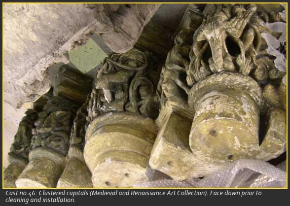
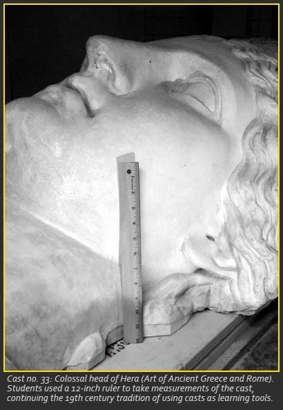

History

For millennia, artists and technicians have molded from nature and from works of art to produce copies in plaster. As early as 2,500 BCE, the Egyptians were making plaster portraits of deceased nobles. And sculptors' workshops in fourteenth-century-BCE Amarna in Egypt yielded numerous plaster faces, at least some of which are life masks. Literary and archaeological evidence reveal that plaster casting was used in the Greek and Roman worlds to produce freestanding statues. Plaster molds could also be made directly from a statue and used to create a close reproduction. The Romans were fascinated with Greek art, and reproductions of Greek statuary were made to adorn Roman villas and gardens, plaster casts being the intermediary.With the surge of interest in antiquity during the Renaissance, plaster casts came to be widely used in universities and in art schools so that scholars and students could study the masterpieces of the ancients. Francesco Squarcione, a fifteenth-century Italian painter, is said to have been the first artist who collected plaster casts in order to train his apprentices. By 1684, the French Academy in Rome had collected over one hundred casts of antiquities, and the kings of France were among the most avid collectors of casts, many of which could be seen at Versailles. Indeed, authenticity was not a concern for most collectors. The first university collection of casts was established in 1767 in Göttingen, Germany.
Napoleon had casts made of works that he did not actually remove to France. The location for France's grand collection became the École des Beaux Arts and the Musée de Sculpture Comparée. Napoleon also authorized the first shipment of plaster casts to America, which went to the Pennsylvania Academy of Fine Arts. In nineteenth center England there was great interest in displaying publicly plaster casts, in an attempt to foster art appreciation and to raise the standard of taste. The Victoria and Albert Museum in London became one of the principal collectors of plaster casts, and it remains so today.
From the mid-nineteenth century through the early twentieth century, the Pennsylvania Academy of Fine Arts, New York's Metropolitan Museum of Art, and the Boston Museum of Fine Arts, were among the leading American collections of plaster casts. Thus casts that were virtually identical to the originals became the next-best option to educate the American public about their heritage. Edward Robinson, curator of the Boston Museum of Fine Arts Department of Antiquities and Assistant Director of the Metropolitan Museum of Art, once said,

"It is only through these casts that the body of our people can ever hope to become familiar with the great masterpieces of European galleries, which have had so much effect upon the taste of people among whom they exist, and might do a similar good work in this country were they only brought within reach."
The Metropolitan Museum of Art opened in 1880. Three years later, the museum received a large bequest from Levi Hale Willard to start a collection of "models, casts, photographs, and other objects illustrative of the arts." (Metropolitan Museum of Art Catalogue of the Collection of Casts, 1908, vii.) At first, most of the casts they acquired were architectural, but in 1888, Henry G. Marquand requested that sculptural casts be added to this collection. The collection of some 2,600 casts molded from original sculptures in the great museums of Europe was exhibited in the front hall of the Museum. Thereafter, funds were used to acquire original works of art, and interest in plaster casts declined. In 1906, the purchase of casts was halted, because of the new emphasis upon the superiority of the original. Influential aristocrats like millionaire J. P. Morgan emphasized that the true measure of a work of art lay in its monetary value, not in its ability to educate. In the 1930s, the plaster casts were placed in storage, where they remained for decades.